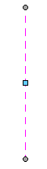
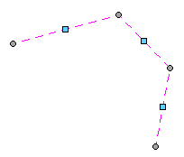
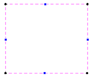
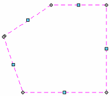
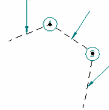
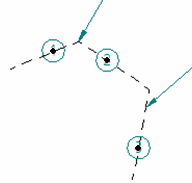
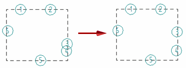
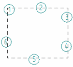

Alignment Shape Properties dialog box (General tab)
Specifies the type of alignment shape and the minimum spacing between annotations created by the Annotation Alignment Shape command.
- Type
-
When a new alignment shape is created, specifies whether it is open or closed.
Shape type
Example
Open


Closed


- Spacing
-
Specifies whether you want to align annotations using Uniform or Non-uniform spacing.
Uniform spacing arranges annotations so that there are equal distances between them.

Non-uniform spacing arranges annotations freely and not necessarily evenly. You can define a minimum spacing value to prevent annotations from being positioned too closely.

- Minimum spacing
-
When spacing is non-uniform, specifies the minimum distance between annotations that are arranged using the alignment shape. The minimum spacing value is based on the alignment points on the annotation, which varies with the type of annotation. Increasing the value may rearrange balloons, but decreasing the minimum spacing value does not.
Example:-
You can increase the minimum spacing value so that it is greater than the distance between balloon 3 and balloon 4. The balloons are rearranged along the shape.

-
You can continue to increase the spacing value, but only until all of the annotations are separated by the minimum spacing value.

-
How do I
Align annotations using the Annotation Alignment Shape commandManage annotations that are associated with an alignment shape
Learn more
Arranging annotations using alignment shapesModifying alignment shapes to rearrange annotations
Look up more details
Annotation Alignment Shape commandShow/Hide Annotation Alignment Shape command
Annotation Alignment Shape command bar
Alignment Shape Properties dialog box
Alignment Shape Properties dialog box (Annotations tab)